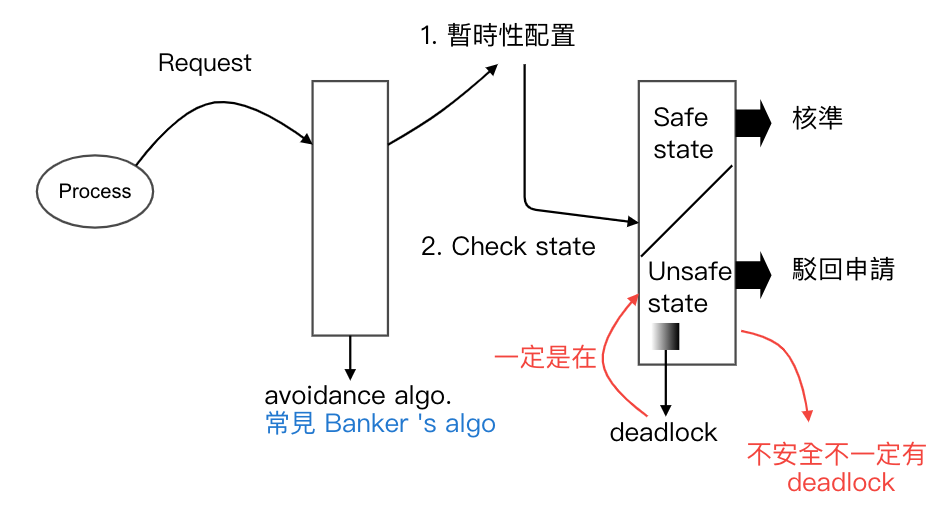
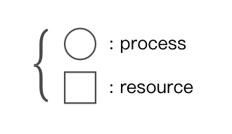
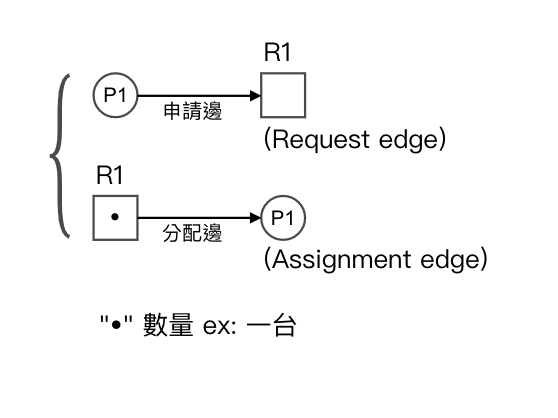
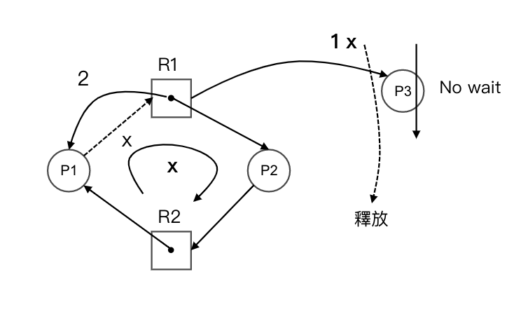
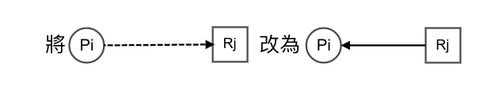
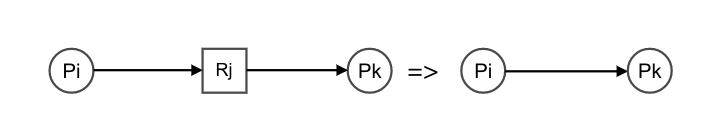
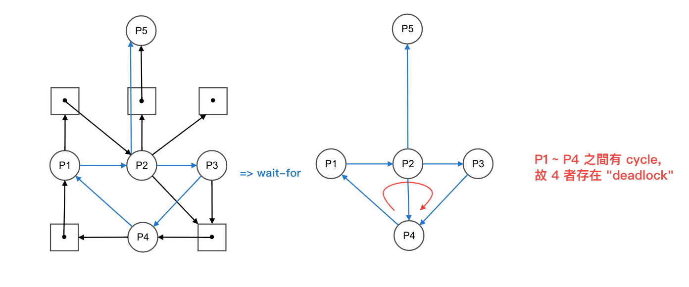

3.5 死結 Deadlock
目錄
- 四要件
- Deadlock 處理方式
- Deadlock Free
deadlock 處理
- Preventation 預防：欲使 deadlock 不會發生
作法：大破四要件之一 - Avoidance 避免：利用避免演算法確保資源分配不會產生 deadlock
作法：Banker's algo. check 安全否 - Detection & Recovery 偵測, 若有恢復
Deadlock Preventation => 打破四要件之一 (打破其中一個即可)
- 打破 "互斥"
- 難達成, 因為此為資源先天的限制, ex: 印表機
- 打破 "Hold and Wait" (要就全拿, 不要就都不拿)
- 作法 1: process 若無法取得, 所需的所有資源, 則需空手
- 作法 2: 提出申請時, 需將手中持有的資源 release
- 圖：

- 打破 "No preemptive" => 將之改為 preemptive
- 不建議, 因為資源先天限制, ex: 印表機, 印了 3 行被搶奪
- 打破 Circular Waiting
- 作法 1:
- 給予各 resource 一獨立編號
- 資源申請須以編號遞增的方式提出
- 圖：


- 反證：令仍然會有 Circular waiting, 假設滿足 2 條件下, 則存在如下的 waiting cycle:

Deadlock Avoidance
- 圖：
- Note:
- Safe state (安全狀態):
指可以找到 ≥ 1 組執行順序, 確保所有的 process 皆可執行完畢
Ex: 5 process (P0 ~ P4) =>P2->P4->P1->P0->P3 - Unsafe state:
指找不到上述一組執行的順序謂之
Ex:P2->P4->.....?
- Safe state (安全狀態):
Avoidance algo.
-
資源皆單一量 => 修改資源分配圖
-
資源非單一量 => Banker's algo.
m * n^2, O(n^2) 效率較佳- m = 資源種類數 (印表機, disk, 螢幕) , n = process 數量
-
Note: Resource Allocation Graph 資源分配圖
Def: 一圖形 G = <V, E>, 其中 V 為頂點, E 為邊- V 分為：
- E 分為：
- 在 Resource Allocation Graph 中的性質
- 當資源皆為單一量 -> 有 cycle, 有 deadlock
- 當資源非單一量 -> 有 cycle, "不見得有 deadlock"
- 圖：
- 資源皆為單一量的 avoidance algo.
於 Resource Allocation Graph 中多加入一種邊 "chian edge" 鏈結邊, Pi...Rj => 指 Pi 在未來會對 Rj 提出申請- 判別： Pi 正式對 Rj 提申請
- 先作暫時性配置
 - Check 是否有 cycle
- 有 -> Unsafe
- 無 -> Safe
- 先作暫時性配置
- Ex: 若 P2 對 R2 正式提出申請, 是否可以？
圖：
Sol: 有 cycle, 故 unsafe state, 所以申請駁回 (若 P1 則可以)
- 判別： Pi 正式對 Rj 提申請
- Banker's algo. 題型
Ex: 系統有 5 個 process {P0...P4}, 三種 resource {A, B, C}, A = 10, B = 5, C = 7, 令時間 T0 時如下圖, 問若 P1 提出 Request1 = (1, 0, 2), 是否可配置？
圖：
Sol:-
Step 1: Need = Max - Allocation (Need: 指 process i 最多尚需多少資源才能完成工作)
-
Step 2:
Request i (1, 0, 2) ≤ Need i (1, 2, 2)
Request i (1, 0, 2) ≤ Available i (3, 3, 2) -
Step 3: 暫時性配置
圖：
-
找執行順序：P1 -> P3 -> P4 -> P0 -> P2,
因為找到執行的順序, 故為 safe state => 故申請核準
-
Deadlock detection algo
- 資源皆單一量：修改資源分配圖 ("Wait-for" graph) => O(n^2)
- 資源非單一量：deadlock detection algo. => O(m * n^2)
Deadlock detection & recovery (資源皆單一量 => 採"Wait-for" graph 等候圖)
- Def: 定期偵測系統是否有 deadlock, 若有則須設法做 deadlock recovery 的動作
- 說明: 將 Resource Allocation Graph 中的
 - Check:
有 cycle => 有 deadlock,No cycle => No deadlock - Ex: 
Deadlock recovery
- 由 user 自己處理
- 由系統處理
- 全砍：
- 優點：簡單
- 缺點：成本高
- 一次砍一個：
- 優點：成本低
- 缺點：複雜
- 全砍：
deadlock free
Def: 在此條件下, 系統沒有 deadlock 問題, 故不需對其做處理, 欲滿足 deadlock free, 則：
- 1 ≤ Max i ≤ m (資源數量)
- 總和(i=1至n) Max i < m + n (n 為 process 數), process i 完成工作最多所需的資源數
Ex:
- 6 台印表機 each process 完成工作最多需 ? 台 printer?
- 問系統中在 deadlock free 下, 最多可有多少 process ?
Sol:
- 1 ≤ Max i ≤ m ≥ 1 < 2 ≤ 6
- 總和(i=1至n) Max i < m + n ≥ 2n < 6 + n, 所以 n < 6, 故 n 最大為 5